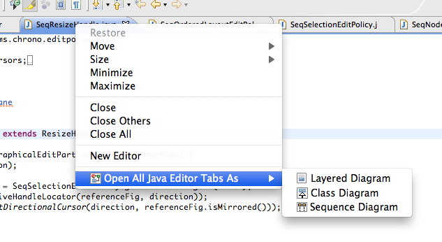

Create diagram from tabs
After navigating in Eclipse for some time it is common for numerous tabs to accumulate. Determining which tabs are important to your current project and which have nothing to do with it can be a challenge. It is also helpful to easily create a visual representation of what you have recently been working on.
---- Your question not answered? Send an email to support@architexa.com ----